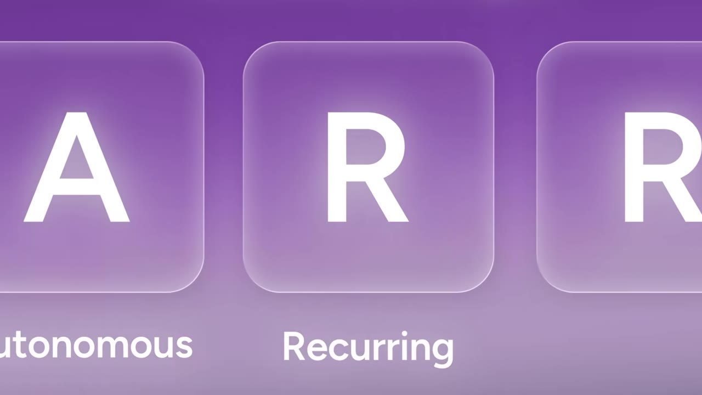
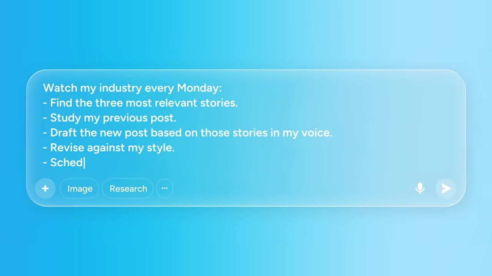
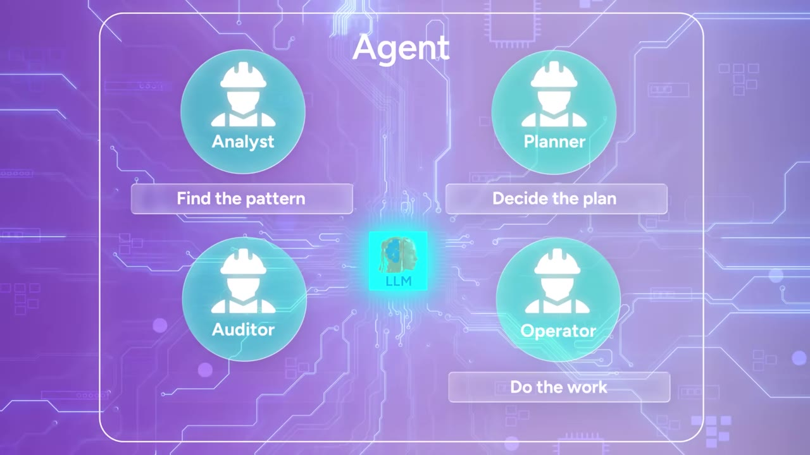
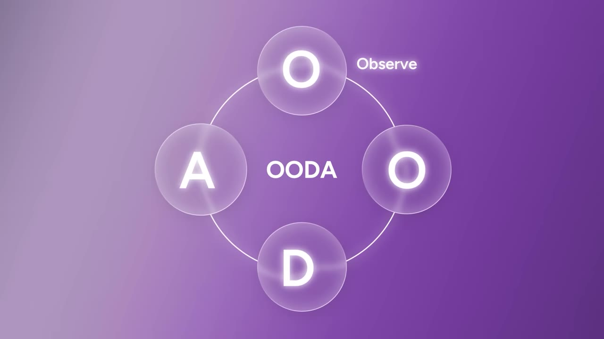
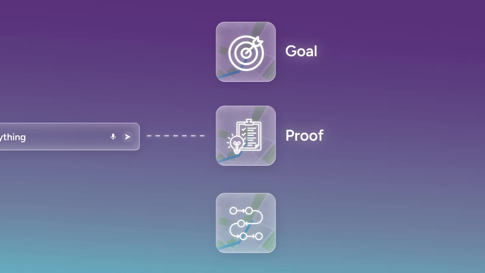

The gap between people who understand AI agents and people who don't is about to get expensive. Four frameworks close it. The throughline: a chatbot waits for your next prompt, an agent figures out its next move — and the real question is which tasks you hand one, and how to brief it so it doesn't drive into a tree.
Watch on YouTubeGetting a decent answer out of ChatGPT was enough six months ago. It isn't anymore. The next shift is agents, and the gap between people who get them and people who don't is about to get expensive. Start with a filter for which tasks even qualify.

it can run without you babysitting each step
it happens again and again, so automation compounds
you can clearly tell whether it did a good job
Needs live judgment, only happens once, or can't be reviewed clearly? Use a prompt, not an agent. That one distinction puts you miles ahead of most people using AI today.
Most people treat agents as more capable chatbots. They're not. Prompting is sitting next to a student driver — you guide, correct, stay alert. An agent is a hired driver: set the destination, hand over the keys, sit in the back. It handles the route, the traffic, every step-by-step decision.

A chatbot waits for your next prompt. An agent figures out its next move.— theMITmonk
Everyone's talking about agents. Almost nobody can tell you what's running inside. A chatbot predicts the next word — give it "Jack fell down and broke his…" and it returns "crown" on probability alone, with no idea the rhyme exists. An agent has the same model at the center, ringed by four workers.

Give it one recurring job — "every Monday at 7am, review the week's support tickets and email leadership a one-page brief" — and you've assigned the work of four people to one agent. Open ChatGPT agent mode tonight, hand it a recurring task, and watch all four workers show up in real time.
What makes agents genuinely different is adaptation. The frame comes from Air Force colonel John Boyd, who studied why American F-86 pilots kept beating technically superior Soviet MiGs in Korea. The MiG was faster and climbed higher — it should have won. It didn't. The Americans could see more and adapt faster, getting inside the enemy's decision cycle before he could respond.

A scripted workflow ("every Friday, build my grocery list and order it") breaks the week your usual item is out of stock and six friends are coming for dinner — not because it's dumb, but because it's built to be obedient, not to think. An agent finds substitutes, adjusts quantities for six, checks your calendar, and rebuilds the whole order around the dinner.
A workflow can follow the process. An agent can reroute it completely.— theMITmonk
The most dangerous thing about an agent is that it will do the wrong thing faster and with more confidence than you ever could. It's a mirror — it reflects the quality of your thinking and amplifies it. It doesn't fix vague direction; it formalizes it. Give it sloppy goals and no feedback loop and it'll drive the car straight into the tree.

Most companies want AI everywhere. The ones actually winning are obsessively narrow. If clarity is the bottleneck, the opportunity isn't broad intelligence — it's narrow ownership. At a construction-software customer conference, a product lead demoed a single agent built for one painfully specific job: collecting field data for one type of customer in one type of situation.
Find a highly specific task people hate doing, but have to do repeatedly. That's where the money is.— theMITmonk
For every software company today, there will be an agent company trying to dethrone it. The winner won't build the broadest agent first. It'll own one workflow, one market, one kind of user pain better than anyone else.
AI is a decoupling machine. For most of modern history your income was tied to your hours — even at the top, you traded time for decisions. Agents break that link: they do the work, and you scale your judgment where it matters most.
Some roles get reshaped — the paralegal, the junior analyst, the coordinator — but every disruption also creates roles nobody imagined (there was no "online community manager" before the internet). The question isn't whether the shift happens; it's whether you shape it or get shaped by it. The most valuable person is no longer the fastest thinker — it's the one who can define good work, spot bad work, and know when to trust an agent versus a human.